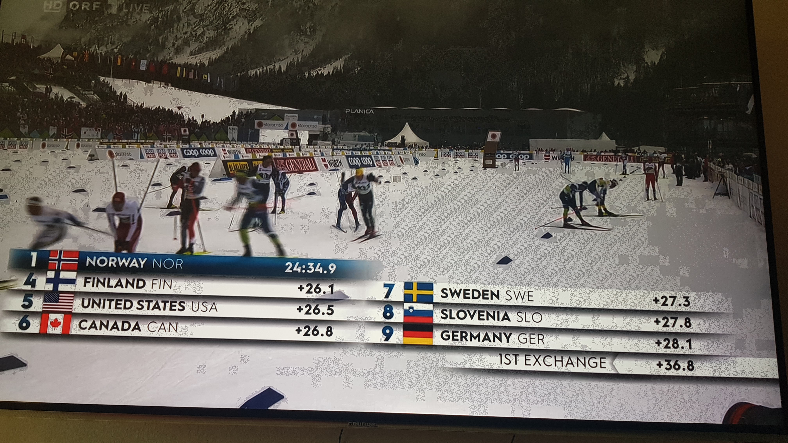

Ich hab mit die anleitungen zur Tv-box durchgelesen und finden hierzu keine lösung!
Es geht um die Farben! Die anleitung hat das problem nicht gelöst! Das weiß reist aus und schwarz läuft zu. Ich hab diese wie in der anleitung, mit denn verschienden einstellungs möglichkeiten wie wechseln zu RGB und co. ausprobiert! Leider ändert sich hirbei der Farbraum nicht! Wenn ich als beispiel denn magente farbton hernehme ist dieser nicht im magenta farbton darstellbar. Das kann aber nicht an meine Tv gereät liegen weil davor war das farblich korrek dargstellt bei einen anderen tv anbieder. Gibt hier eine lösungs vorschlag?
vor 46 Minuten schrieb Farbfutzi:Ich hab mit die anleitungen zur Tv-box durchgelesen und finden hierzu keine lösung!
Es geht um die Farben! Die anleitung hat das problem nicht gelöst! Das weiß reist aus und schwarz läuft zu. Ich hab diese wie in der anleitung, mit denn verschienden einstellungs möglichkeiten wie wechseln zu RGB und co. ausprobiert! Leider ändert sich hirbei der Farbraum nicht! Wenn ich als beispiel denn magente farbton hernehme ist dieser nicht im magenta farbton darstellbar. Das kann aber nicht an meine Tv gereät liegen weil davor war das farblich korrek dargstellt bei einen anderen tv anbieder. Gibt hier eine lösungs vorschlag?
Betrifft die Frage die neue MagentaTV-Box oder die "alte" 4K-Box von MAGENTA die eigentl. seit 01.03.2023 gar nicht mehr funktioniert sollte? 😑
Ich mein damit diese box ---> https://www.magenta.at/tv/tv-box
Sieht der Bildfehler so aus wie im Foto bei Grundig Geräten 4k ausschalten 
Auf dem Foto meinst du was anderes! Ich mein die Farben betrachtet man die flaggenfarbe stimmen die farben nicht dies lässt sich aber auch im gesamten bildaufbau betrachten. Wenn gelb Orange wird oder das blau ein dunkelblau oder ein braun fast orange. Um es mal simpel zu beschreiben! Wenn es hier keine support leute gibt die damit erfahrung haben ist das hier nicht die richtige für lösungen plattform. Oder wissen die hersteller nicht mehr wie farben auszusehen haben bei ihren eigernen landes flaggen wenn man das bild als beispiel heranzieht!
Hier ein Beispiel wobei das mit dem Handy fotografiert wurde und es hier abweichungen gegeben kann das ist mir klar! Aber wie man auf dem foto erkenne kann sind die Haare fast garnicht mehr sichtbar und die Gesichts Farben passen da auch nicht!
Oder hier aus einer Dokumentations Aufgenommenes foto wie gesagt auch mit dem Handy abfotografiert aber da wo das grün in denn tiefen schon fast schwarz ist oder ären auf dem Acker garnicht farblich passen.
Mit anderen Zuspielgeräten zB. DVD Player sind Die Bilder natürlich dargestellt?
Wenn möglich bitte Type und Software Stand des TV Gerät bekanntgeben.
MfG
Hab kein anderes abspiel Gerät und angeschlossen. Es ist ein LG-Tv welcher aber seit der Umstellung bzw. Aktivierung von der magentabox kein updatet erhalten hat. Software version 05.70.35
{kind=link}
{kind=link}
{kind=link}